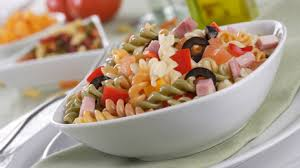

Ensalada de pasta
Receta de ensalada con espirales
Receta súper fresquita y rápida para el veranito😊. Combinación de diferentes ingredientes que juntos hace que está ensalada este de rechupete!

Ingredientes
- 300 gr. de espirales de pasta
- 50 gr. de jamón cocido
- 50 gr. de queso Cheddar
- 50 gr. de aceitunas negras sin hueso
- ½ pimiento rojo
- 1 tomate
- aceite de oliva
- vinagre de Jerez y sal.
Elaboración (Pasos)
- Pon una olla con agua a calentar

- Una vez la olla este hirviendo poner los espirales
- Poner todos los ingredientes restantes en un plato cortados a trozitos
- Una vez los espirales cocidos poner a escurrir la pasta
- Poner la pasta escurrida en el plato i contimentar al gusto